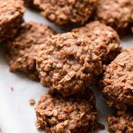

No-Bake Cookies

Description
The highlight of any meal is the desert. The right desert will leave a lasting impact on your memory of This meal as a whole
and what better desert to compliment a spicy main course than a frozen chocolatey treat. This recipe for No-Bake Cookies are
perfect for any occasion and are the perfect top off to my favorite meal.
Ingredients
- Sugar
- Butter
- Milk
- Unsweetened Cocoa Powder
- Vanilla
- Quick Oats
- Peanut Butter
Recipe
-
First line two baking sheets with parchment paper (or just spread a long sheet of the parchment onto the counter),
or have 29 cupcake liners set out.
-
Then in a 2.5 – 3 quart saucepan combine sugar, butter, cocoa powder and milk.
-
Set saucepan over medium heat and begin whisking.
-
Cook and whisk frequently until it reaches a boil, then once it reaches a full boil stop stirring and let it
boil for 1 minute.
-
Remove the mixture from heat then immediately add in vanilla, peanut butter and oatmeal. And stir to blend well.
-
Drop mixture onto prepared parchment dropping 2 Tbsp at a time
(a medium cookie scoop works well here or just use two large spoons).
-
Let the cookies set than throw the pan in the freezer, After a few hours you can dig in!
Recipe Reference
Return to Home